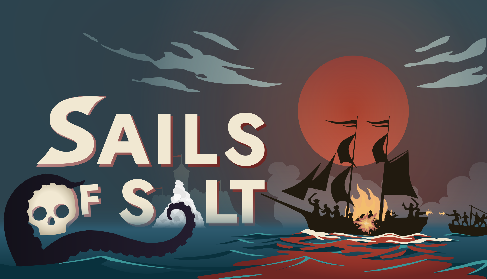
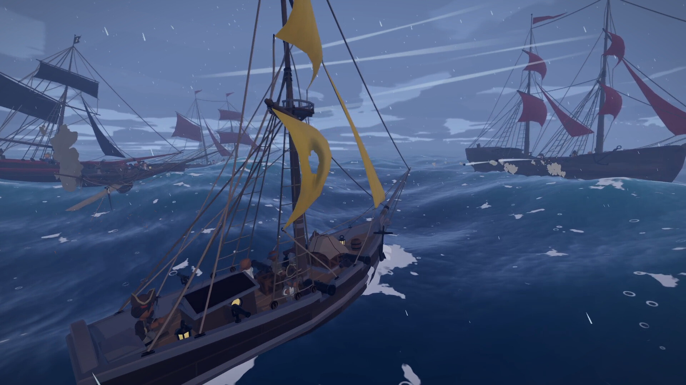
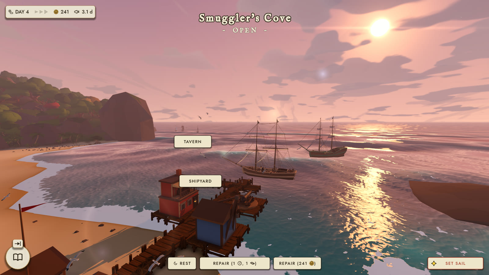

Barnacle Bytes — my one-person game studio

Sails of Salt is the first game from Barnacle Bytes, the one-person studio I founded in 2026: a singleplayer open-world pirate roguelite for PC, built in Godot 4.8. I do all of it myself — code, art, trailer, store page and release.
You captain a single ship through real-time broadside battles on a physically simulated sea — and board whatever you can't sink.

Between fights you trade in harbours, take contracts and sail further out for richer prizes while the Empire hunts you. If your captain dies, the voyage is lost — but the legend carries on to the next one.

The free demo is out on Steam; the full release is planned for Q1 2027.